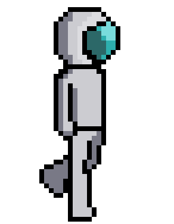
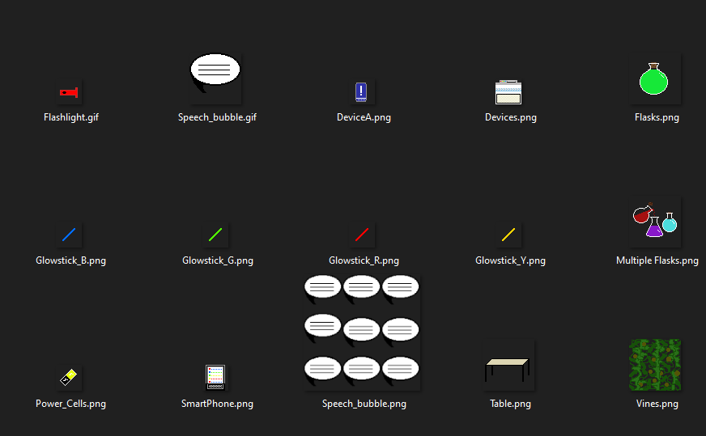

Detail Description Part Two
Testing
While developing the game, there were a lot of trial and error in finding the right resolution to fit the characters in the stage. The game was tested and trialed by certain group members to see if it worked. There were bugs on the character resizing everytime it moved. This was easily fixed by Kelvin who debugged the code successfully. All the bugs currently discovered have been tested and fixed completely, when finishing the complete prototype for the presentation more tests would be done on the finished product to make sure there are no bugs.
Timeframe
Week 7-8
During Assignment 2, we talked more on the game project on how it’ll be developed such as what game engine to use, as well as the software to use to create the sprites, artwork, and music.
Week 9:
This week was used to dedicate the roles for each member on either the game project or the report and to create samples of pixel sprites or music that could potentially be used for the game project.
Kelvin’s work on the Playable character animation for walking.
Here are some assets done by Alex:

Week 10:
- Kelvin started developing the game using the sprites that he made and also sprites that both Kemal and Alex given to him
- Dave composes his first music that will be use for one of the scenes in the game.
- Kemal and Alex focus on creating multiple sprites and background objects as suggested by Kelvin for the game project.
Week 11:
- At this stage, Kelvin was able to get the playable character’s movement and jumping animation done as well as a testing stage to test these features.
Week 12:
- Due to lack of time, we had to rush the game project.
- Kelvin worked on more of the scenes such as a title screen and the first level.
- Kemal was not able to make sprites but gave some inspiration to Kelvin to work on them.
Ten weeks and beyond:
I cannot say that an extra ten weeks will define this game project as being complete, as we want the game to have multiple stage or levels where the playable character can go through them and use many interactions presented to them. We also wanted to add a range of NPCs that we did not add in the current phrase due to the lack of time and that there were no stages that we can provide to place them in. Other content we wanted to add were cinematics such as the opening scene before you start playing and more animations.
Risks
Ideally, the potential risks can be broken down into multiple factors such as:
Timeframe - To complete as much as possible of the game will of course involve time and will need all our members to respond especially those involved in making the game.
The ability to learn in a short amount of time using Unity as well as any other programs depending on their difficulty.
As we are making a game, there will be potential errors and bugs that need to be removed such as graphical images clipping through the ground or audio not playing etc. As such we need to be aware of these and have them fixed.
Group processes and communications
While only four people including myself (Kelvin) decided to make the game together, I was able to communicate with each member working on the game project at least two or three times a week to see how they are going and what insights are given to improve their work as well as offering feedback to me on what we can achieve with current skills and time.